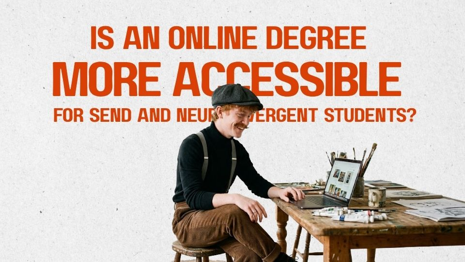

University Transition
Is an Online Degree More Accessible for SEND and Neurodivergent Students?
Online study can remove barriers such as travel and sensory overload, but it can also create new challenges around structure, digital systems and support. Here’s what to check before deciding whether an online course is more accessible for you.

Online degree can look like the more accessible option.
No commute. No packed lecture theatres. More control over noise, lighting and breaks. Maybe you can replay teaching instead of trying to process everything in real time.
For some students with special educational needs and disabilities (SEND) and neurodivergent students, that can make a real difference. But online does not automatically mean accessible. It may remove some barriers while creating others.
Starting university is also a transition, whether you arrive on campus or log in from home. You are still learning new routines, new systems, new expectations and new ways of asking for support. The question is not only whether an online course looks accessible, but whether its design makes that transition easier to navigate.
The barriers can change
Online study may help if travel, sensory overload or busy campus environments take a lot of energy.
But it can also mean:
- more independent organisation;
- more screen time;
- less external structure;
- support that feels less visible;
- more reliance on digital platforms; and
- fewer casual opportunities to ask someone for help.
So the useful question is not: “Is online university more accessible?”
It is: “Is this online course more accessible for me?”
Check what “online” actually means
Before accepting an offer, find out how the course really works.
Ask:
- Are lectures live, recorded or both?
- Are there fixed attendance times?
- How much group work is there?
- Are presentations required?
- How are exams and assessments delivered?
- Are there any compulsory campus days or placements?
A course can be described as flexible while still expecting you to be online at specific times every week.
If you are considering Falmouth, its How You Study Online and Online Learning Support pages give a useful picture of how this works in practice. Online students have Academic Tutors for course-related support and dedicated Student Advisors who can help with things such as wellbeing, accessibility and navigating university support.
Ask how support actually works
“We support disabled students” sounds reassuring, but it does not tell you much about what will happen in practice.
Ask things like:
- Can I get live captions or transcripts?
- Are lectures recorded?
- Can materials be provided in accessible formats?
- Are alternative presentation arrangements possible?
- Is specialist mentoring available remotely?
- Who do I contact if an agreed adjustment is not happening?
At Falmouth, the Disability Support page explains how Individual Learning Plans (ILPs) work. An ILP can communicate recommended reasonable adjustments to your course team, and students can apply through My Falmouth.
If digital accessibility is important for you, it is also worth checking the Falmouth Learn accessibility statement. It explains features such as keyboard navigation, zoom up to 400% and compatibility with screen readers including JAWS, NVDA and VoiceOver, as well as known accessibility limitations.
That kind of information can help you work out whether the actual digital learning environment is likely to work with the tools and setup you use.
What about missing the campus experience?
Online students may miss some of the informal parts of university life — welcome events, societies, or simply meeting people between classes. That can affect how transition feels.
If peer connection matters to you, the Falmouth & Exeter Students’ Union Neurodiversity & Disability Society is one example of a student-led space for meeting people with similar experiences and finding community.
This is also part of my PhD project, Building Identity Through Stories (BITS), which explores how creative storytelling might support SEND and neurodivergent students during the transition into university.
As part of the project, I’ll also be hosting online creative workshops - https://bitsresearch.github.io/#upcoming-workshops, so students who are not regularly on campus can still take part, share experiences and connect with others in a low-pressure space.
Quick FAQ
Is online university easier for neurodivergent students?
- Not necessarily. Some students benefit from flexibility and greater control over their environment, while others find reduced structure more difficult.
Can online students get reasonable adjustments?
- Yes. What is reasonable will depend on your needs, the course and the barriers involved, so speak to the university’s disability service about how adjustments work online.
Can distance-learning students get DSA?
- Eligible distance-learning students can receive Disabled Students’ Allowance (DSA). Eligibility rules vary, so check the guidance for where you normally live.
Should I contact disability support before starting university?
- Yes. It can be especially useful if you already know you may need adjustments.
Disclaimer: This is an independent informational post and is not official guidance from, endorsed by, or representative of Falmouth University. Course delivery, support, reasonable adjustments and funding arrangements vary, so please check directly with the relevant university or official service.